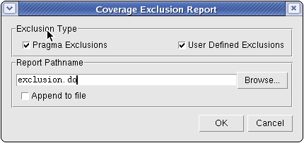

Access:
GUI:
Command
Line: coverage report -excluded
Create a coverage exclusion
report within the GUI as follows.
Figure 1. Coverage Exclusion Report Dialog
Procedure
- Select Pragma and/or User Defined
Exclusions to report.
- Save the pathname.
- Click OK.